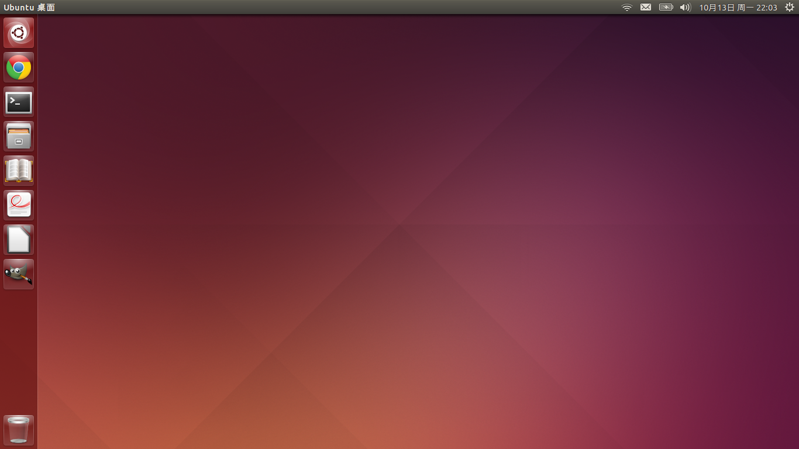

插入 Ubuntu U 盘到 USB 然后 开机时在品牌 Logo 界面 按下 F12 选择 USB Flash 项 开始安装 Ubuntu 系统
在为 Ubuntu 分区时 我是这样做的 这里要说的话就是 在 BIOS 中没识别硬盘不要紧
在 20G 固态硬盘里 首先划分出 150M 为 EFI 分区 然后 为根目录 / 划分 15G 空间 余下空间留给 /SWAP 分区
将 /home 挂载到 500G 硬盘 事情告成之后 再安装了一些软件 看下图

Windows 7 vs Ubuntu
安装包大小 Windows 7 2G 以上 | Ubuntu 1G 从 安装包上看 Ubuntu 没有什么巨大优势
但是你要知道 Ubutnu 安装即可使用 而 Windows 7 安装完成之后 可能显卡,网卡驱动都没有
还要从另一台计算机上下载驱动 而 Ubuntu 自带网卡驱动,触控板驱动,显卡驱动
笔记本没有使用 Debian 的原因在于 系统的安装和使用要经过 复杂的配置 漫长的安装时间
而 Ubuntu 的问题是 总会有点小毛病要处理 比如屏幕亮度不能保存 者可以在开机脚本中设置 非常简单
总之 Unity 桌面很实用 Ubuntu 是免费好用的操作系统
安装 Ubuntu 的原因是学习编程 否则 我会安装 Windows 系统 疯狂的玩游戏
关于编程 之前(小打小闹)学过一点(约等于没学) 因此 想学习 Python 编程找到一份工作
在学习过程中 无可避免的要用到 谷歌 安装 Chrome 浏览器(因为它真的很快) 你还得注册一个谷歌邮箱
在中国 要让 Google 正常的使用 可能还得将它放进 /etc 目录 然后可以正常的使用 Google